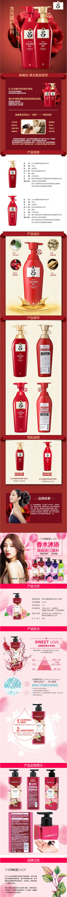

韩国进口洗发、护发、沐浴5件组合
【品鉴记录】
红吕主打损伤毛发的修复，防脱+滋润强韧修复，适合染烫后修复使用。主要功效为深层修复、滋养柔顺、强健发根。对细软干燥或受损秀发进行深层修复，滋养发质。
采用“香水乳化技术”的菲诗小铺香水沐浴露融合各种鲜花精华，让肌肤散发持久天然芳香，洗后滋润保湿，留香持久让肌肤滑嫩紧实。
红吕主打损伤毛发的修复，防脱+滋润强韧修复，适合染烫后修复使用。主要功效为深层修复、滋养柔顺、强健发根。对细软干燥或受损秀发进行深层修复，滋养发质。
采用“香水乳化技术”的菲诗小铺香水沐浴露融合各种鲜花精华，让肌肤散发持久天然芳香，洗后滋润保湿，留香持久让肌肤滑嫩紧实。
【规 格】
1. 韩国原装进口红吕无硅油洗发水护发素400ml*2 1套
2. 吕洗发水护发套装50ml*2 1套
3. 菲诗小铺香水沐浴露500ml 1瓶
1. 韩国原装进口红吕无硅油洗发水护发素400ml*2 1套
2. 吕洗发水护发套装50ml*2 1套
3. 菲诗小铺香水沐浴露500ml 1瓶

品牌介绍
高端韩方洗护发品牌吕，在韩国读作Ryo，创立于2008年，在韩国所有洗护发品牌中销量第一，受到众多消费 者的认可和推崇。吕Ryo，意指体内均衡流淌的美丽音律。甄选人参精华与韩国天然本土原料，传承“韩方”理念，与爱茉莉太平洋 独有的现代科学技术相融合，可实现头皮最佳均衡状态，赋予发根活力，打造丰盈亮泽秀发，传递高端奢华的品牌价值。
菲诗小铺（THE FACE SHOP）源自韩国，2007年获得英国kifus化妆品有限公司技术配方支持。全球知名高 档化妆品品牌，在韩国以销售量计算是规模最大的化妆品公司。在韩国为前100大企业之一（其中只有2个化妆品品牌）、为韩国 前三大保养品、化妆品公司。
高端韩方洗护发品牌吕，在韩国读作Ryo，创立于2008年，在韩国所有洗护发品牌中销量第一，受到众多消费 者的认可和推崇。吕Ryo，意指体内均衡流淌的美丽音律。甄选人参精华与韩国天然本土原料，传承“韩方”理念，与爱茉莉太平洋 独有的现代科学技术相融合，可实现头皮最佳均衡状态，赋予发根活力，打造丰盈亮泽秀发，传递高端奢华的品牌价值。
菲诗小铺（THE FACE SHOP）源自韩国，2007年获得英国kifus化妆品有限公司技术配方支持。全球知名高 档化妆品品牌，在韩国以销售量计算是规模最大的化妆品公司。在韩国为前100大企业之一（其中只有2个化妆品品牌）、为韩国 前三大保养品、化妆品公司。